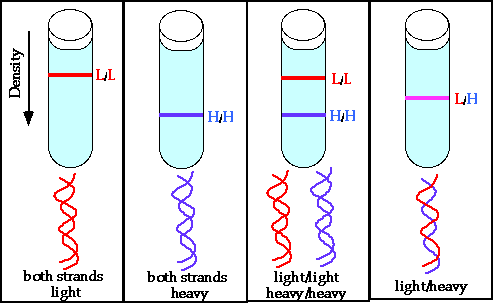
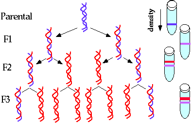

Nucleic Acids and the Genetic Material Problem Set 1
Problem 6: Meselson-Stahl DNA replication experiment
In the Meselson-Stahl DNA replication experiment, if the cells were first grown for many generations in 15N containing media, and then switched to 14N containing media, what percent of the DNA had 1 light strand and 1 heavy strand after 2 generations of growth in 15N growth media?Meselson and Stahl's Experiment
Meselson and Stahl in 1957 gave experimental evidence that each DNA strand served as a template for new synthesis, a process called semi-conservative replication
- E. coli grown in 15N nitrogen (heavy isotope).
- Switch to 14N nitrogen (light) and after one, two, or three generations take samples of DNA.
- Mix with cesium chloride and separate heavy and light DNA.
Experimental Methods
DNA of heavy, light, and intermediate densities can be separated by centrifugation.
Experimental Results
Conclusions
- Results show that after one generation, the double stranded DNA is 1/2 heavy (from the parent) and 1/2 light (newly synthesized). This means that 100% of the strands are of intermediate density.
- After a second generation, one half of the new daughter strands are light (using 14N DNA as template and synthesizing 14N NA) and one half are intermediate density (using 15N DNA as a template and 14N DNA for synthesis). This result is predicted by semiconservative replication.
- Conclusion- as predicted by Watson and Crick, DNA strands serve as templates for their own replication.


University of Arizona
Thursday, October 3, 1996
Contact the Development Team
http://biology.arizona.edu
All contents copyright © 1996. All rights reserved.